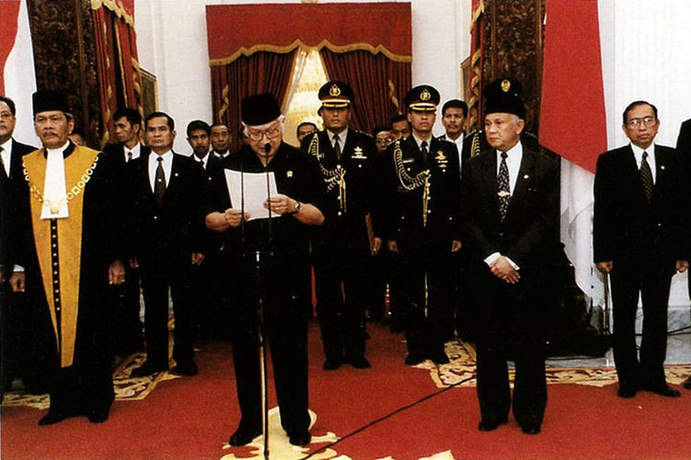
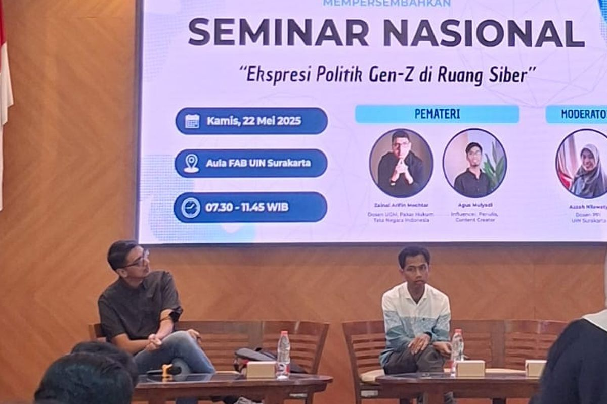
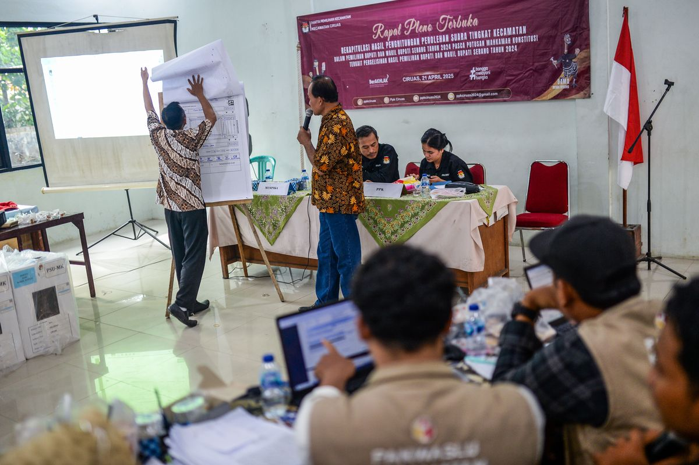

.jpg)
Krisis Ekonomi dan Politik Menjelang Reformasi 1998

Latar belakang lahirnya Reformasi ditandai dengan krisis ekonomi dan politik pada akhir pemerintahan Orde Baru. Krisi ekonomi dan politik disebabkan oleh sejumlah faktor. Mulai dari melemahnya nilai rupiah hingga kegerahan rakyat akan proses pemilu yang selalu yang selalu mengunggulkan Golkar dan Soeharto.
klik disiniMengapa Gen Z Wajib Melek Politik?

Di Indonesia, generasi (Gen) Z, generasi milenial, dan generasi (Gen) X kini mencakup sekitar 58 persen dari total populasi. Artinya, anak-anak muda ini akan menjadi kekuatan besar dalam menentukan arah masa depan bangsa, termasuk dalam dunia politik.
klik disiniTujuh Agenda Perbaikan Sistem Politik

DI TENGAH berbagai isu yang datang silih-berganti dalam beberapa bulan terakhir, ada hal yang kita lupa. Tak lain adalah perintah Mahkamah Konstitusi (MK) untuk memperbaiki sistem Pemilu dan sistem politik ke depan. Pascagugatan Pemilu lalu, MK dalam disenting opinion-nya menyatakan bahwa pelaksanaan Pemilu 2024 secara umum lancar..
klik disini